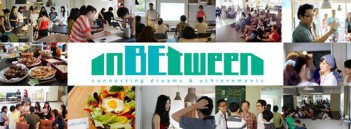

資源地圖
創意啟蒙
創業團隊
新創公司
卓越成長
常見問題
空間
整合政府與民間所提供的創業空間，並分為五種類別。
資料來源：
青年創業及圓夢網
｜取得時間：2016/05/22
開啟創業之路
空間
InBetween International

InBetween International
創業空間類型：Co-working space 共同工作空間
所屬單位：民間單位 - 聯創文化有限公司
招募團隊類型：文化創意,科技網路,APP應用,社會企業,創新服務,其他
建築類型：一般房屋
建造材質：鋼筋混凝土
建物現況：良好
樓別/樓高：3樓/12樓
使用坪數：65
聯絡人資訊
聯絡人：Zona 鄒小姐
連絡電話：(07)269-1839，0909-106-123
聯絡e-mail：connectinbetween@gmail.com
官方網站：
https://www.facebook.com/ConnectInBetween
進駐條件
進駐/使用人數：20~25人
價格方案：
單日體驗：10am-10pm(100NT/天，體驗價限兩天，200NT/天)
聯合創新：10am-10pm(2700NT/月，6600NT/季)
團結合作(同一團體限3-5人)：10am-10pm(每人2500NT/月，每人6000NT/季)
夜貓出沒：6pm-10pm(1000NT/月)
商業註冊(中期)：最少六個月(每人2000NT/月 + 商業註冊費用1500NT/月)
商業註冊(長期)：一年約(每人1800NT/月 + 商業註冊費用1300NT/月)
使用時間：每日10am-10pm
備註：以上為2016夏季進駐方案(3月~6月)
＊本空間於平日每晚六點後與六日，不定期活動舉辦，進駐者享有參加優惠。
空間介紹
InBetween是全台灣第一間以跨文化交流為核心的伴工空間。
我們相信台灣有許多人具備在國際舞台上發光發熱的潛能，但卻受限於文化與語言的差異、專業簡報技巧及商業行銷才能，而無法開拓其能見度。InBetween的文化顧問會提供進駐者來自不同文化的想法，激發更多可能的機會。並從形象建立、行銷設計、通路推廣寫作與國外接洽等方面，協助品牌行銷，讓世界跟世界的資源接軌，創造更多可能。
【空間簡介】
InBetween位於四維路底，接近大遠百、駁二特區與自強夜市，交通便利生活機能良好。室內使用空間約35坪（不含廚房），其中包含：
- 開放式工作空間
- 開放式平面空間
- 會議空間
- 含浴室洗手間、淋浴間(提供熱水器)
- 沙發休息區
- 高速wifi網路與投影、音響裝置
我們希望能營造一個悠閒輕鬆的工作空間，引導大家透過不同文化和專業的溝通模式，在共同工作時跳脫平時的觀點。也因此我們的空間絕大多數都是採取開放式，便交流想法、激發更多的創意與靈感。
【空間運作】
(1)提供共同工作空間，舉辦相關交流活動促進同業合作及異業之間交流。
(2)邀請外部專業講者辦理專業工作坊，讓入駐的共同工作者得以學習並練習相關技能。
(3)不定期舉行、講座、展演、、分享會及語言技能交流、交換活動。
【發展目標】
InBetween International的方向是在地紮根，經營緊密的共學／共創高雄社群聯結國際，因此整體空間營運會側重於專業培訓，並協助自由工作者以及新創(start up)邁向國際化。
地圖